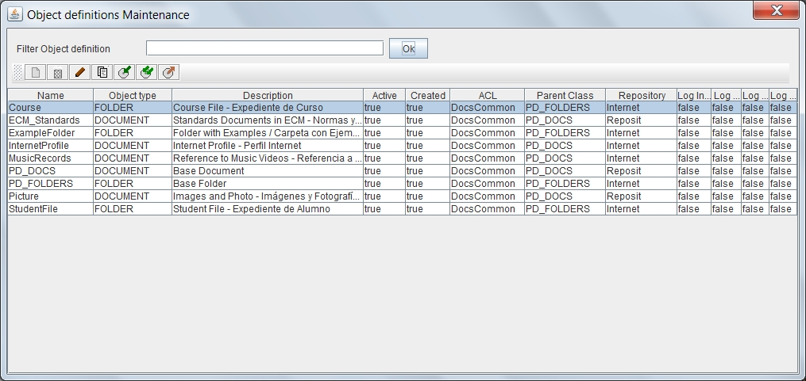

Object Definitions List
By selecting the option to manage Object Definitions, will appear the form "list of Object Definitions". This form allows you to maintain all the system Object Definitions.
In OPD we can define different types of folders (containers) and types of documents to model the documentary structure of the organization. From basic types of objects (or PD_FOLDERS PD_DOCS) it is possible create an unlimited number of subtypes each of whom will inherit the metadata defined in "father" types.
To handle or search for documents we can consider independently each type or subtypes can be included in the operation.
The folders or containers can also be defined with different metadata and with a hierarchical structure that reflects the desired model.
To filter object definitions that you want to review, just enter part of the name in the text box and press the button. The list of object definitions that meet the conditions appear in the results table.
Pressing the button without entering any value you see all the elements on which the user has permission. The results table shows the data:
- Identification name
- Object Type (DOCUMENT or FOLDER), ie container or document with metadata and a file / content
- Description of the Object Definition
- Boolean flag indicating whether the object type is active
- ACL of the object definition. According to the ACL, it will be possible for the user to modify the definition of the object (View ACL)
- "parent" Definition from which inherit attributes (and on until the top level of the types "base" PD_FOLDERS or PD_DOCS)
- Repository to store the documents of this type (View Repositories)
- Boolean flag indicating whether to register the operations of Add, Delete, Update and Search

This results table can be sorted by selecting the header of each column. You can also change the size of each column by dragging the separator line in the headers.
Above the table of results there are several buttons for performing operations on the selected item.
ALWAYS should be selected an item, even to create a new type as the selected item is taken as the parent class of the new type documentary. If a folder is selected, the new type is a folder, if a document, the new type is a document. The available operations are:
-
 Add a new element
Add a new element
-
 Delete the selected element (if it is not used in some document or folder)
Delete the selected element (if it is not used in some document or folder)
- Modify the selected element
-
 Create a new item as a copy of the selected item
Create a new item as a copy of the selected item
-
 Export the selected item
Export the selected item
- Export all items listed
-
 Import from file one or more previously saved items
Import from file one or more previously saved items
-
 Export all items listed in CSV format so it can be imported in Databases or Spreadsheet
Export all items listed in CSV format so it can be imported in Databases or Spreadsheet
It should be noted on export and import, that some elements may have dependency on others, so you must export all related and imported at the time of it in the proper order.
In the event of an error (lack of user permissions, data inconsistency, etc.), the operation is canceled and will present the reason for the error to the user.
View Objects Definition Maintenance
Help Index OpenProdoc